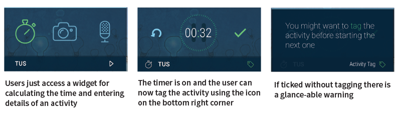
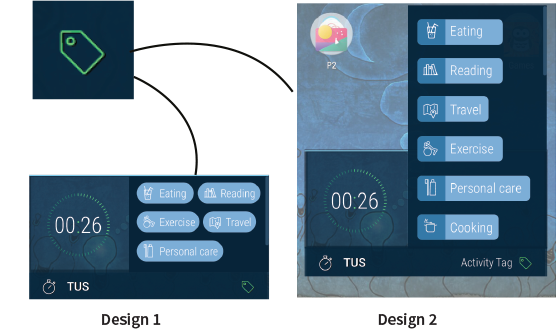
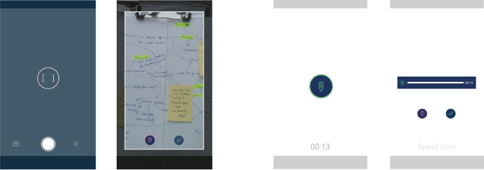
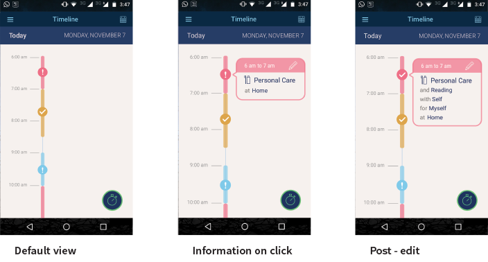
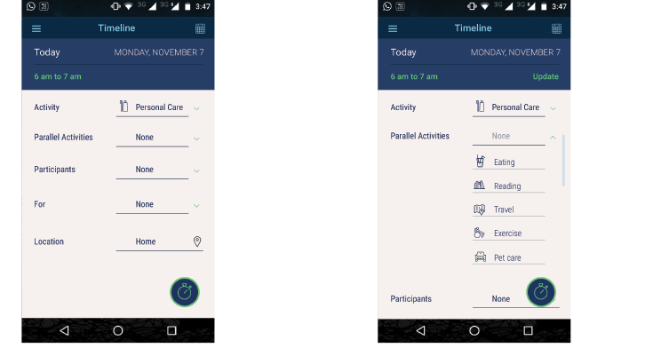
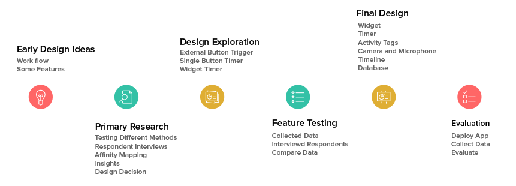
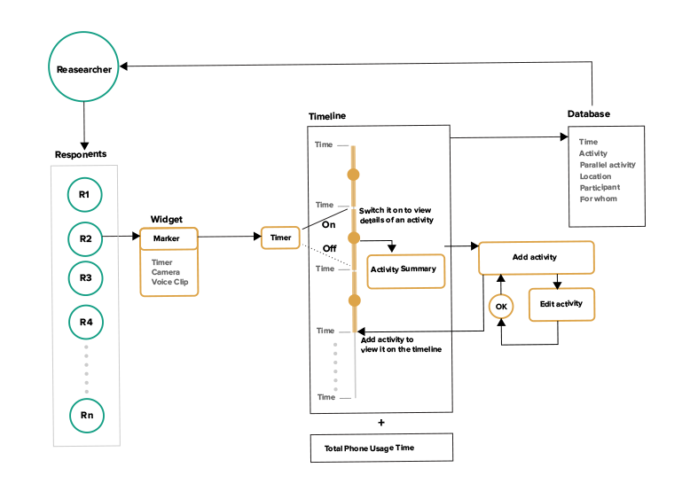
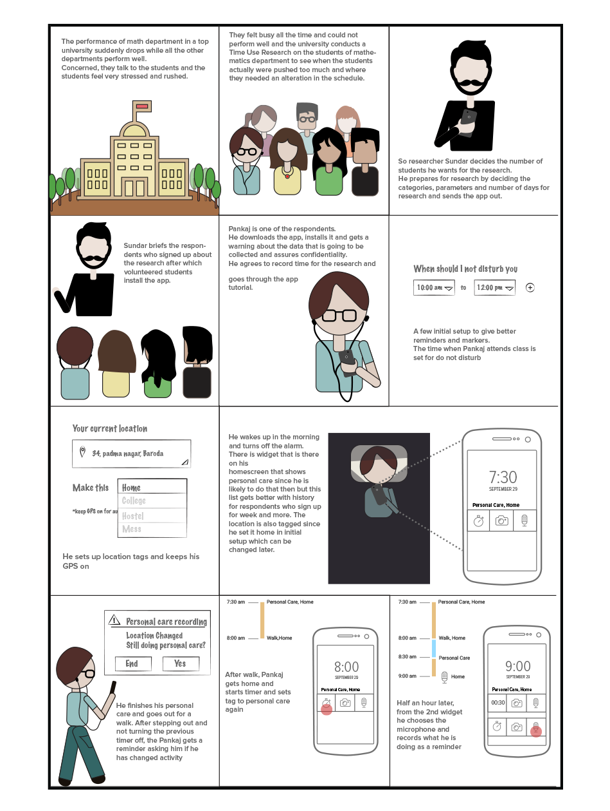

Samay Lekha
A tool for collecting Time Use Data.
Time use studies rely on either participants keeping track of their activities or data collectors observing and interviewing participants. This is effort intensive relative to the quality of data thus collected. In this project, I attempt
to create a Time Use Data collection tool that is context aware, effortless for the respondent and saves data in a research-convenient format. Samay Lekha is a smartphone application which attempts to enable entering data as easy as any daily routine
for the respondent.

On clicking tags icon from the main widget or from the warning screen gives a drop down list of activities. The activities are based on the proposed list from secondary research.
Activity Tags

On clicking tags icon from the main widget or from the warning screen gives a drop down list of activities. The activities are based on the proposed list from secondary research.
Input Methods

Timeline

Exclamation means the activity is not completed on the timeline. Still some editing is required which means not all fields are completed but some marker is added. On tapping the Exclamation, the user gets
to edit the activity to update it.
Edit Screen

Database

The data gets saved in the database and the details are in a simple format based on the tags. This can be easily viewed and sent to the researcher. The option to extract this is available in the burger button
from the app.
Design Timeline

Primary Research

Concept Model

Scenario

Feature Testing
In order to make this effort intensive process of data entry seamless with the daily routine of respondents, the design decision of Samay Lekha has a lot of features. There are
multiple input methods for recording time, which was based on Respondent interviews.

Whatsapp groups were made with each respondent and they could send voice recording, picture of their activity or type the details as they wished Evaluation Using the prototype an evaluation was done with
think aloud test and a form was filled with interviews later. Two tasks of recording time with camera and microphone were given in think aloud test. Later they were asked to use the application for 24 hours
Report Download Report from this
link
Acknowledgement Thank you Dhiraj to help me develop the application